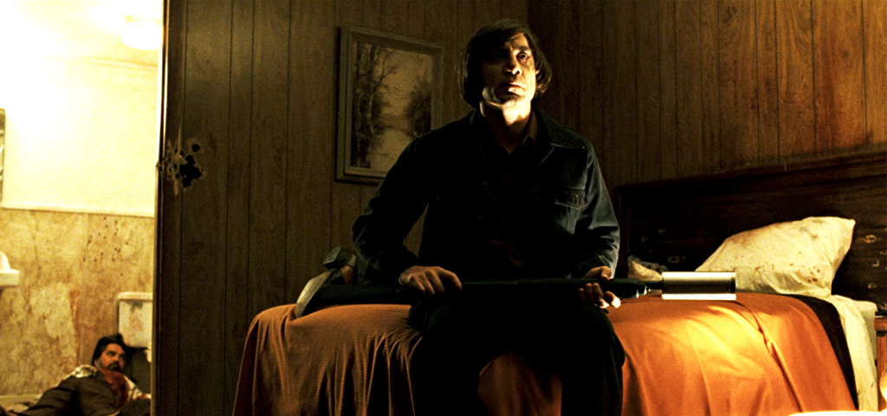
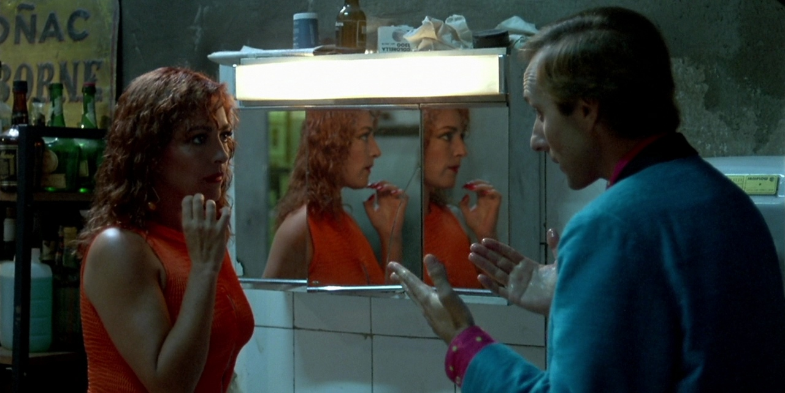

Introducción
En esta página, que es mi proyecto final de la unidad uno del Bootcamp
DEV.F + Bécalos, compartiré cinco películas que me gustan mucho. Intento darles
un orden por puestos, pero no lo tomen de manera tan estricta, pues aunque las cinco
son muy buenas y recomendables, seguramente dejé otras del mismo valor para mí fuera del top.
Puesto 5 - No country for old men (2007) Dir. Ethan Coen, Joel Coen
Género: Suspenso, western.
Sinopsis: Mientras esta de cacería, Llewelyn Moss descubre las horribles consecuencias de una venta de drogas frustrada.
A pesar de saber que no debería, Moss no puede resistirse a tomar el dinero y se apodera de él. El cazador empieza a ser
perseguido por un asesino llamado Chigurh. El alguacil Bell también está buscando a Moss, y reflexiona sobre los cambios
en el mundo y un oscuro secreto que lo atormenta mientras intenta hallar a Moss para protegerlo.
Comentario:
Puesto 4 - La ley del deseo (1987) Dir. Pedro Almodóvar
Género: Comedia, suspenso.
Sinopsis: Pablo y Tina son dos hermanos con unas vidas muy complicadas: Pablo es un autor de teatro
y director de cine homosexual, que está profundamente enamorado de Juan, un joven que no corresponde
a su amor. Tina, por su parte, es una transexual enojada con los hombres y que lucha por ser actriz.
Todo se complicará cuando entre en escena Antonio, un joven apasionado y celoso.
Comentario:
Puesto 3 - Happy together (1997) Dir. Wong Kar-Wai
.jpg)
Género: Romance, drama.
Sinopsis: Lai Yiu-Kai y Ho Po-Wing viven una apasionada relación. Viajan desde Hong Kong a Argentina,
pero la llegada al nuevo país parece transformar las cosas y Ho, de repente, abandona a Lai. Éste comienza
a trabajar como portero de un bar, con el único afán de reunir el dinero suficiente para volver a su país.
Un día Ho reaparece, pero las cosas ya no son iguales.
Comentario:
Puesto 2 - Mulholland drive (2001) Dir. David Lynch
.jpg)
Género: Suspenso, misterio.
Sinopsis: Una mujer de cabello oscuro es abandonada amnésica después de un accidente automovilístico.
Ella recorre las calles de Los Ángeles entes de refugiarse en un departamento. Ahí ella es descubierta por Betty,
una rubia del medio oeste que ha llegado a la Ciudad de los Ángeles en busca de fama como una actriz. Juntas,
las dos intentan resolver el misterio de la verdadera identidad de Rita.
La historia está ambientada en un lugar de ensueño, sin tráfico y humo.
Comentario
Puesto 1 - The Sacrifice (1986) Dir. Andréi Tarkovski

Género: Drama, misterio.
Sinopsis: Alexander, un actor retirado, celebra su cumpleaños con familiares y amigos cuando un anuncio
en la TV advierte sobre la inminencia de la Tercera Guerra Mundial y una catástrofe nuclear.
Enfrentado a una crisis existencial, Alexander jura renunciar a todo lo que estima para evitar el desastre.
Comentario: